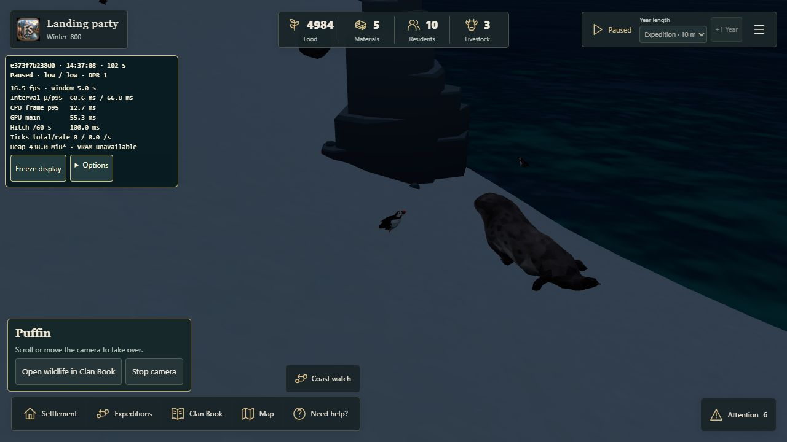
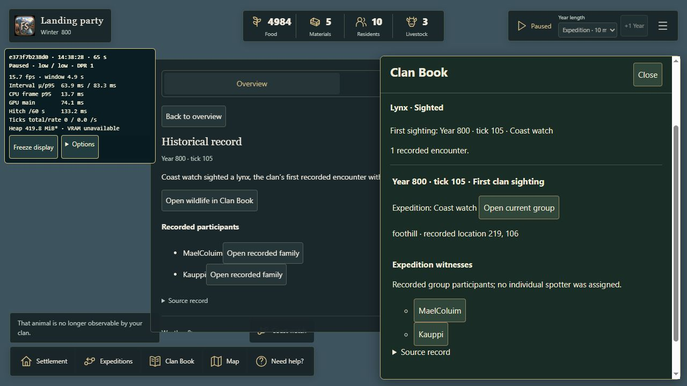

Wildlife focus from anywhere
Export your own campaign first. Reload to the start menu, then use Recover or import → Import campaign → Continue campaign for these genuine expedition checkpoints. The camera deliberately starts far away, looking elsewhere.
- Seal checkpoint: Attention → Discoveries → the seal record. The camera should focus the real seal despite starting at the opposite side of the island.
- Puffin checkpoint: select the actual puffin record. Scroll, drag or pinch to take over immediately.
- Lynx checkpoint: the actual expedition has recorded the distant lynx. Open its record to focus it.
- Same lynx after the group leaves: the animal still exists, but the expedition has walked away and it is now in fog of war. Its historical record must open without moving the camera to its hidden current location.
The camera uses one checked local reframe for distant targets, without flying through unknown terrain. The campaign stays paused. Viewing the animal reveals no terrain and creates no new sighting.
Validation report · Actual expedition evidence
Recorded browser proof
These captures use the real production build, not a generated illustration. The first native wheel gesture ended the puffin orbit and applied normal zoom while the campaign remained paused.

Remote puffin and first-wheel diagnostics · Remote seal diagnostics

Unchanged camera and tick during fog fallback · Exact runtime source hashes